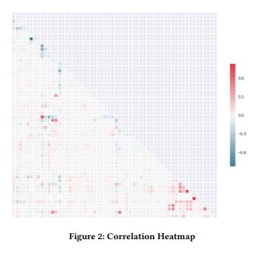

As part of a team designed and conducted experiments on reactor type and staging
Investigated the effect of staging of CSTRs on conversion and the effect of packing on PBRs
Analyzed the data with Python and Excel
Presented findings to our class
Heat Fin Geometry and Material Project
As part of a team designed and conducted experiments on heat fin materials and geometries
Wrote a python script to perform nonlinear regression to determine the convective heat transfer coefficient
Analyzed the results of our data to determine the ideal geometry and material for heat fins
Presented findings to our class
Gas Chromatography Project
Designed an experiment to determine the composition of a sample with gas chromatography
Analyzed the results using the software Peak Simple
Wrote a report on the experiment and results
Presented findings to our class

Diabetes Machine Learning Project
Cleaned a large dataset of diabetes readmission rates from 130 hospitals
Split the data into a train and test set and then trained predictor models using the Naive Bayes Classifier, logistic regression, random forest classifier, adaboost classifier, and neural network classifier algorithms
Compared the different algorithms based on accuracy, overfitting, and computational complexity